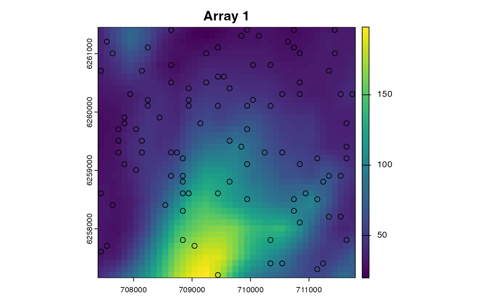
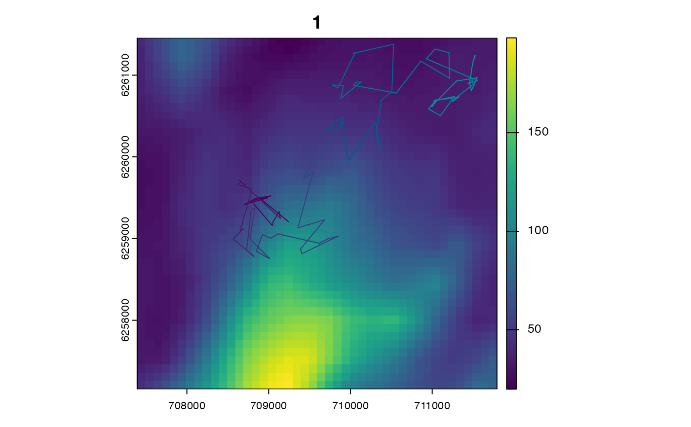

This function implements the two-filter particle smoother (Fearnhead et al., 2010).
pf_smoother_two_filter(
.map = NULL,
.mobility = NULL,
.n_particle = NULL,
.n_sim = 100L,
.verbose = getOption("patter.verbose")
)(optional) 'Mobility box' arguments for two-dimensional states and 'fully hospitable' maps.
.map is a SpatRaster that defines the study area of the simulation (see pf_filter()).
.mobility is a numeric value that defines the maximum moveable distance between two time steps (e.g., .timeline[1] and .timeline[2] in pf_filter()).
.map and .mobility should be supplied if pf_filter() was implemented with .state = "StateXY" and there are no NAs on the .map.
(optional) An integer that defines the number of particles to smooth.
If specified, a sub-sample of .n_particles is used.
Otherwise, .n_particle = NULL uses all particles from the filter.
An integer that defines the number of Monte Carlo simulations.
User output control (see patter-progress for supported options).
The function returns a pf_particles object.
The two-filter smoother smooths particle samples from the particle filter (pf_filter()). Particles from a forward and backward filter run are required in the Julia workspace (as defined by pf_filter()). The backend function Patter.two_filter_smoother() does the work. Essentially, the function runs a simulation backwards in time and re-samples particles in line with the probability density of movements between each combination of states from the backward filter at time t and states from the forward filter at time t - 1. The time complexity of the algorithm is thus \(O(TN^2)\). The probability density of movements is evaluated by Patter.logpdf_step() and Patter.logpdf_move(). If individual states are two-dimensional (see StateXY) and there are no NAs on the .map, a 'mobility box' can be defined to simplify probability calculations. The box is defined by the extent of the .map, shrunk by .mobility. Within this region, the probability density of movement between two states can be calculated directly. Otherwise, a Monte Carlo simulation, of .n_sim iterations, is required to compute the normalisation constant (accounting for movements into inhospitable areas, or beyond the boundaries of the study area).
Fearnhead, P. et al. (2010). A sequential smoothing algorithm with linear computational cost. Biometrika 97, 447–464. https://doi.org/10.1093/biomet/asq013.
Particle filters and smoothers sample states (particles) that represent the possible locations of an individual through time, accounting for all data and the individual's movement.
To simulate artificial datasets, see sim_*() functions (especially sim_path_walk(), sim_array() and sim_observations()).
To assemble real-world datasets for the filter, see assemble_*() functions.
pf_filter() runs the filter:
To run particle smoothing, use pf_smoother_two_filter().
To map emergent patterns of space use, use a map_*() function (such as map_pou(), map_dens() and map_hr()).
#### Set up example
# Set up the particle filter with an example dataset
# (See `?pf_filter()` for the full workflow)
args <- example_setup("pf_smoother_two_filter")
#> `patter::julia_connect()` called @ 2024-08-01 11:43:39...
#> ... Running `Julia` setup via `JuliaCall::julia_setup()`...
#> ... Validating Julia installation...
#> ... Setting up Julia project...
#> ... Handling dependencies...
#> Warning: `JULIA_NUM_THREADS` could not be set via `.threads`.
#> ... `Julia` set up with 8 thread(s).
#> `patter::julia_connect()` call ended @ 2024-08-01 11:43:44 (duration: ~5 sec(s)).


# Run the particle filter forwards
args$.direction <- "forward"
fwd <- do.call(pf_filter, args)
#> `patter::pf_filter()` called @ 2024-08-01 11:43:46...
#> ... 11:43:46: Checking user inputs...
#> ... 11:43:46: Setting initial states...
#> ... 11:43:46: Setting observations...
#> ... 11:43:46: Running filter...
#> ... 11:43:46: Collating outputs...
#> `patter::pf_filter()` call ended @ 2024-08-01 11:43:46 (duration: ~0 sec(s)).
# Run the particle filter backwards
args$.direction <- "backward"
bwd <- do.call(pf_filter, args)
#> `patter::pf_filter()` called @ 2024-08-01 11:43:46...
#> ... 11:43:46: Checking user inputs...
#> ... 11:43:46: Setting initial states...
#> ... 11:43:46: Setting observations...
#> ... 11:43:46: Running filter...
#> ... 11:43:47: Collating outputs...
#> `patter::pf_filter()` call ended @ 2024-08-01 11:43:47 (duration: ~1 sec(s)).
#### Example (1): Implement the smoother with default options
# Run the smoother
# * This uses objects defined by `pf_filter()` in `Julia`
smo <- pf_smoother_two_filter()
#> `patter::pf_smoother_two_filter()` called @ 2024-08-01 11:43:47...
#> ... 11:43:47: Setting smoother arguments...
#> ... 11:43:47: Running smoother...
#> ... 11:43:47: Collating outputs...
#> `patter::pf_smoother_two_filter()` call ended @ 2024-08-01 11:43:47 (duration: ~0 sec(s)).
# The filter returns a `pf_particles`-class object
# (See `?pf_filter()` for examples)
class(smo)
#> [1] "list" "pf_particles"
summary(smo)
#> Length Class Mode
#> xinit 0 -none- NULL
#> states 6 data.table list
#> diagnostics 4 data.table list
#> convergence 1 -none- logical
#### Example (2): Implement the smoother using 'mobility box' arguments
# We can take advantage of the 'mobility box' arguments b/c:
# * `.state` = "StateXY"
# * `.map` does not contain NAs
args$.state
#> [1] "StateXY"
args$.map
#> class : SpatRaster
#> dimensions : 1000, 1000, 1 (nrow, ncol, nlyr)
#> resolution : 10, 10 (x, y)
#> extent : 0, 10000, 0, 10000 (xmin, xmax, ymin, ymax)
#> coord. ref. : WGS 84 / UTM zone 29N (EPSG:32629)
#> source(s) : memory
#> name : last
#> min value : 150.0003
#> max value : 350.0000
# To implement the mobility `box`, we define `.map` and `.mobility`,
# ... which we can see here is 750 m:
args$.model_move
#> ModelMoveXY(env, truncated(Gamma(1, 250.0), upper = 750), Uniform(-pi, pi));
# Run the smoother
# * In all of these examples, we should implement the smoother like this,
# * but for illustration purposes we only do so here.
smo <- pf_smoother_two_filter(.map = args$.map, .mobility = 750.0)
#> `patter::pf_smoother_two_filter()` called @ 2024-08-01 11:43:47...
#> ... 11:43:47: Setting smoother arguments...
#> ... 11:43:47: Running smoother...
#> ... 11:43:47: Collating outputs...
#> `patter::pf_smoother_two_filter()` call ended @ 2024-08-01 11:43:47 (duration: ~0 sec(s)).
#### Example (3): Implement the smoother with a sub-sample of particles
# This is useful for quick tests
smo <- pf_smoother_two_filter(.n_particle = 50L)
#> `patter::pf_smoother_two_filter()` called @ 2024-08-01 11:43:47...
#> ... 11:43:47: Setting smoother arguments...
#> ... 11:43:47: Running smoother...
#> ... 11:43:47: Collating outputs...
#> `patter::pf_smoother_two_filter()` call ended @ 2024-08-01 11:43:47 (duration: ~0 sec(s)).
#### Example (4): Adjust the number of MC simulations
smo <- pf_smoother_two_filter(.n_sim = 1000L)
#> `patter::pf_smoother_two_filter()` called @ 2024-08-01 11:43:47...
#> ... 11:43:47: Setting smoother arguments...
#> ... 11:43:47: Running smoother...
#> ... 11:43:48: Collating outputs...
#> `patter::pf_smoother_two_filter()` call ended @ 2024-08-01 11:43:48 (duration: ~1 sec(s)).
#### Example (5): Analyse smoothed particles
# * See `map_*()` functions (e.g., `?map_dens()`) to map utilisation distributions